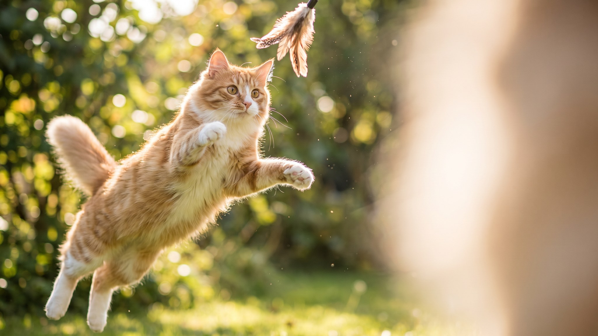

Вчера сметала всё за минуту, сегодня нюхает ту же миску, дёргает лапой и уходит. Знакомо? Привередливость кошки редко бывает чистым капризом — за ней почти всегда стоит понятная причина. И это важно: длительный отказ от еды для кошки опаснее, чем для собаки или человека. Разберём, почему так происходит и как вернуть аппетит, не превращая кормление в войну.
🐾 Не уверены, что рацион подходит?
Напишите в AnimaLife, чем кормите, — приложение покажет, чего не хватает, и рассчитает порцию под вес, возраст и активность. Бесплатно.
Проверить рацион → Проверить в MAX →
У вас iPhone? AnimaLife есть в App Store
Кошка выбирает еду не только на вкус. На её «да» или «нет» у миски влияет сразу несколько вещей:
Главная ошибка — «проголодается и съест, никуда не денется». С кошками это опасная тактика: длительный отказ от еды бьёт по печени и ухудшает состояние быстрее, чем кажется. Морить голодом здоровую на вид кошку, чтобы «переупрямить», нельзя.
Вторая ошибка — бесконечно менять корма при каждом отказе. Так кошка быстро учится: поупрямишься — дадут что повкуснее. Привередливость в этом случае мы выращиваем сами.
Важно отличать «кошка капризничает» от «кошке плохо». Покажите кошку ветеринару, не затягивая, если:
Внезапная избирательность у кошки, которая раньше ела всё, — частый ранний сигнал, что что-то беспокоит. В остальных случаях пара настроек подачи и режима обычно возвращают спокойное кормление.
🐾 Соберите рацион под свою кошку
AnimaLife учитывает породу, возраст, вес и образ жизни и подсказывает, сколько и чем кормить. Плюс напоминания о кормлении и контроль веса.
Собрать рацион → Собрать в MAX →
У вас iPhone? AnimaLife есть в App Store
🐾 Понравился разбор?
Подпишитесь на канал — каждый день разбираем по одному тревожному симптому у кошек и собак: что в пределах нормы, а когда пора к врачу. Подпишитесь, чтобы не пропустить разбор, который может спасти здоровье вашего питомца.
Материал носит информационный характер и не заменяет очную консультацию ветеринара.